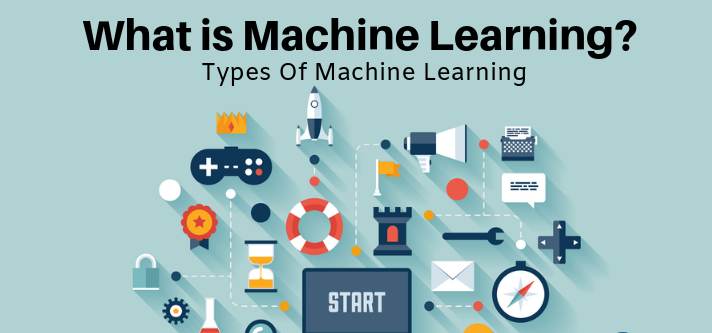

Τύποι εργασιών Μηχανικής μάθησης

Οι εργασίες συνήθως ταξινομούνται σε τρεις μεγάλες κατηγορίες, ανάλογα με την εκπαίδευση ή τα εργαλεία που είναι διαθέσιμα σε ένα σύστημα εκμάθησης. Αυτές είναι:
- Επιτηρούμενη μάθηση
- Μη επιτηρούμενη μάθηση
- Ενισχυτική μάθηση
Το πρόγραμμα δέχεται εισόδους καθώς και τα επιθυμητά αποτελέσματα από έναν χρήστη, και ο στόχος είναι να μάθει έναν γενικό κανόνα προκειμένου να αντιστοιχίσει τις εισόδους με τα αποτελέσματα.
Ο αλγόριθμος δεν δέχεται πληροφορίες απο κάποιον χρήστη, οπότε πρέπει να βρεί την δομή των δεδομένων εισόδου χωρίς παρέχεται κάποια εμπειρία. Η μη επιτηρούμενη μάθηση μπορεί να γίνετα ανακαλύπτοντας κάποια κρυμμένα μοτίβα ή μέσο για ένα τέλος.
To πρόγραμμα αλληλεπιδρά με ένα δυναμικό περιβάλλον στο οποίο πρέπει να επιτευχθεί ένας συγκεκριμένος στόχος, χωρίς κάποιος χρήστης να του λέει ρητά αν έχει φτάσει κοντά στο στόχο του.